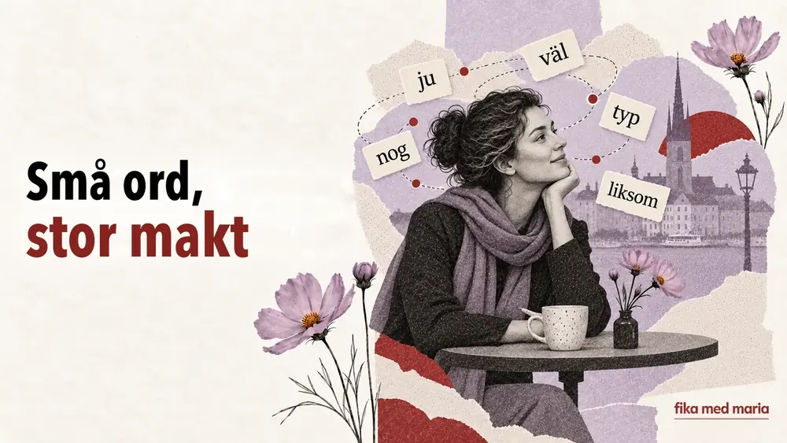

Små ord, stor makt: ju, väl, nog, typ och liksom

Man kan förstå alla ord i en mening och ändå inte begripa varför den lät som en förebråelse. Orsaken gömmer sig ofta i en partikel som ordboken översätter vagt eller föreslår att man inte översätter alls.
Ju, väl, nog, typ och liksom är små, men de styr relationen mellan dem som pratar. De visar vad vi anser vara självklart, vad vi tvivlar på, vilket svar vi förväntar oss och hur bokstavligt det som sägs ska tas.
Ju: ”det vet du ju”
Ju signalerar att informationen är känd eller borde vara självklar för samtalspartnern.
Det är ju fredag.
Ungefär: i dag är det fredag, och det vet vi båda.
Du vet ju hur han är.
Ungefär: du känner honom, du vet hur han brukar vara.
Jag har ju redan sagt det.
Ungefär: jag har redan sagt det – du borde komma ihåg.
Ju kan, beroende på intonationen, skapa en känsla av närhet – ”det vet vi båda” – eller låta irriterat: ”det här borde ha varit självklart”.
Väl: jag förväntar mig att du håller med
Väl förvandlar ofta ett påstående till en mild fråga eller en begäran om bekräftelse.
Du kommer väl i morgon?
Ungefär: jag utgår från att du kommer i morgon, eller hur?
Det är väl inte så farligt?
Ungefär: jag hoppas att du håller med om att det inte är så illa.
Du har väl inte glömt mötet?
Ungefär: du har inte glömt mötet, hoppas jag?
Ibland är det önskade svaret redan inbakat i en fras med väl. Den som frågar vill inte bara veta om du kommer. Frågan visar att hen räknar med att du kommer.
Nog: troligen, men jag lovar ingenting
Nog kan uttrycka ett antagande eller en försiktig tillförsikt.
Hon kommer nog senare.
Ungefär: hon dyker troligen upp senare.
Det går nog bra.
Ungefär: jag tror att det ordnar sig.
Jag hinner nog.
Ungefär: jag antar att jag hinner.
Intressant nog låter ukrainskans ”мабуть” (”troligen”) ibland osäkert, medan svenskans nog med en viss intonation nästan kan fungera som en lugnande försäkran: allt borde ordna sig.
Typ: ungefär, så att säga, något i stil med
Typ betyder sedan länge mer än ”sort” eller ”kategori”. I talspråk uttrycker det ofta att något är ungefärligt.
Det var typ hundra personer där.
Ungefär: omkring hundra personer var där.
Han är typ chef.
Ungefär: han är någon sorts chef – eller något åt det hållet.
Jag blev typ chockad.
Ungefär: jag blev, så att säga, chockad.
Det kan både markera att något är ungefärligt och helt enkelt fungera som ett utfyllnadsord.
Liksom: ”på något sätt”, ”som om”, ”du förstår”
Liksom är särskilt beroende av sammanhanget.
Det kändes liksom fel.
Ungefär: det kändes på något vis inte rätt.
Han bara stod där, liksom.
Ungefär: han stod bara där, du förstår vad jag menar.
Jag vet liksom inte vad jag ska säga.
Ungefär: jag vet inte ens vad jag ska säga.
Liksom visar ofta att talaren har svårt att formulera en känsla exakt eller att hen bjuder in samtalspartnern att själv fylla i resten av betydelsen.
En mening – fem olika stämningar
Låt oss ta en neutral mening:
Han kommer i morgon. – Bara ett neutralt besked.
Nu ändrar vi bara ett enda ord:
- Han kommer ju i morgon. – Ungefär: han kommer i morgon, och det vet vi båda.
- Han kommer väl i morgon? – Ungefär: han kommer i morgon, eller hur?
- Han kommer nog i morgon. – Ungefär: han kommer troligen i morgon.
- Han kommer typ i morgon. – Ungefär: han kommer i morgon, eller något åt det hållet.
- Han kommer liksom i morgon… – Ungefär: han kommer visst i morgon… men det finns en hake.
Grammatiken har nästan inte ändrats. Talarens inställning till informationen har ändrats helt.
Så lär du dig dem
Skriv inte upp ju = ”som du vet” eller väl = ”förmodligen”. Sådana ekvationer slutar snabbt att fungera.
Gör i stället kort med hela situationer:
Situation: en vän har glömt något som ni redan har bestämt.
Fras: Men vi har ju bestämt det!
Situation: du räknar med att någon kommer.
Fras: Du kommer väl?
Vilken fras uttrycker bäst: ”Hon är förmodligen redan hemma”?
- Hon är ju hemma.
- Hon är nog hemma.
- Hon är väl hemma?
Visa svaret
Rätt svar: 2.
På Språkkafe och på privatlektionerna övar vi sådana ord i situationer, med intonation och i levande dialoger.
Går det att helt enkelt låta bli att använda de här orden?
Det går, men språket låter då rakare och mer bokligt. Det är ännu viktigare att lära sig känna igen orden när andra använder dem.
Vilket av dem är svårast?
Vanligtvis ju och väl, eftersom de inte förmedlar ett faktum utan en förväntan mellan samtalspartnerna.